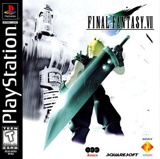
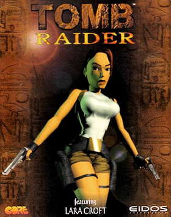
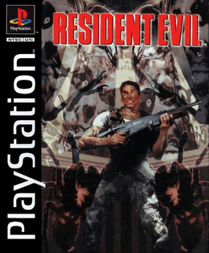
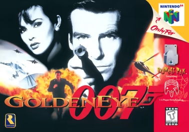

BLOQUE 2 · LAS DOS CONSOLAS
Specs comparados · 1996
| CARACTERÍSTICA | NINTENDO 64 | PLAYSTATION |
|---|---|---|
| CPU | MIPS R4300i 93.75 MHz | MIPS R3000A 33.87 MHz |
| RAM | 4 MB (+4 Expansion Pak) | 2 MB + 1 MB VRAM |
| Almacenamiento | Cartucho 8-64 MB | CD-ROM 650 MB |
| Polígonos/seg | ~100,000 | ~360,000 (texturas planas) |
| Audio | 16-bit @ 48 kHz | 24-channel ADPCM |
| Lanzamiento Japón | Junio 1996 | Diciembre 1994 |
| Lanzamiento USA | Septiembre 1996 | Septiembre 1995 |
| Precio launch USA | US$199 | US$299 (luego $199) |
BLOQUE 3 · EL VEREDICTO
Las ventas lifetime · 1994-2006
NINTENDO 64
~32.93 millones · 6 años en mercado (1996-2002)
PLAYSTATION
~102.5 millones · 12 años en mercado (1994-2006)
BLOQUE 4 · DECISIÓN 1
El cartucho — la apuesta que costó la guerra
El costo real de esa decisión:
· Cartuchos costaban US$15-25 a producir. CDs costaban US$0.50.
· Third-parties pagaban más por copia → menos margen → muchos eligieron Sony.
· Capacidad: 8-64 MB en N64 vs 650 MB en CD. El N64 técnicamente NO podía tener FMV cinemáticas largas, soundtracks orquestales completos ni los RPGs de Square.
Esta sola decisión determinó quién podía hacer qué tipo de juego en cada consola durante 6 años.
BLOQUE 4 · DECISIÓN 2
El éxodo Square — enero de 1996

Cita de Hironobu Sakaguchi: "FF VII tiene 40+ minutos de cinemáticas FMV. Necesita el CD. El cartucho de N64 no puede hacerlo."
El golpe completo: Square hizo TODOS sus RPGs para PS1 entre 1997-2001: Chrono Cross, Vagrant Story, FF VIII, IX, Parasite Eve, Saga Frontier. Cero exclusivos N64 de Square.
El público adulto japonés y americano se cambió a PS1 con Square. Y nunca volvió.
BLOQUE 4 · DECISIÓN 3
Tomb Raider · Resident Evil · Metal Gear Solid
Los tres exclusivos PS1 que definieron al público adulto de la generación 5. Los tres necesitaban CD para sus FMVs y voice acting. El N64 técnicamente no podía hacerlos.

EXCLUSIVO PS1

EXCLUSIVO PS1

EXCLUSIVO PS1
BLOQUE 5 · LA EXCEPCIÓN N64
GoldenEye 007 — el party game que salvó al N64

Multiplayer split-screen que se convirtió en el party game definitivo para una generación. Inventó el FPS de consola.
Es la razón principal por la que el N64 no terminó en bancarrota. Pero un juego no salva una consola — y para el 2000 ya no había nada que pudiera hacer.
BLOQUE 6 · CRONOLOGÍA DE LA GUERRA
1996-2002 · año por año
BLOQUE 7 · POR QUÉ IMPORTA HOY
El legado de la guerra · 2026
1 · COLECCIONISMO
Los cartuchos N64 son más caros que los CDs PS1 hoy. Por rareza relativa — 33M unidades vendidas vs 102M, hay un tercio del stock en circulación.
2 · ESCUELAS DE DISEÑO
El N64 enseñó cómo se hace 3D jugable (cámara controlable, multiplayer split-screen, level design 3D). La PS1 enseñó cómo se hace narrativa interactiva (cutscenes, voice acting, FMV). Las dos escuelas viven hoy.
3 · MERCADO RETRO
GoldenEye, Zelda Ocarina y Mario 64 siguen siendo referencias para primera consola 3D bien hecha. PS1 tiene FF VII, MGS, RE como referencia narrativa de la generación.
4 · LECCIÓN DE NEGOCIO
El hardware más potente NO gana. Gana el que tiene mejor catálogo + precio + relación con third-parties. Nintendo aprendió esto y por eso Switch (y Switch 2) tienen specs modestos con catálogo cuidado.
CIERRE
La lección de la generación 5
CHECKLIST · PRE-GRABACIÓN
Antes de prender cámaras
- ☐ Luis — memorizar las 10 anclas (datos duros — son el corazón del episodio). Verificar VGChartz lifetime sales el día de grabación.
- ☐ Setup — N64 + PS1 sobre la mesa en plano lateral. Contraste visual fuerte. Si no hay PS1 prestada, usar foto en B-roll.
- ☐ Koko — anécdota personal: ¿tuviste N64, PS1 o las dos? Su rol es ser el coleccionista N64 reaccionando al análisis frío.
- ☐ Audio — episodio narrativo. Audio limpio prioridad. B-roll musical ambient (no temas con copyright).
- ☐ Tono — análisis FRÍO. NO defensivo Nintendo. Reconocer explícitamente que Sony ganó.
- ☐ Ritmo — episodio largo (20-25 min). Cronómetro visible. Bloque 4 (las 3 decisiones) no más de 8 min total.
- ☐ Frase final — memorizar palabra por palabra. Re-grabar Luis solo si no quedó natural.